import numpy as np, pandas as pd
import matplotlib.pyplot as plt
import re
import seaborn as snsEDA on Lending Club dataset
pd.options.display.max_colwidth = 200Load Data
loan_data_df = pd.read_csv('loan.csv', low_memory=False)
column_desc_df = pd.read_excel('Data_Dictionary.xlsx')
loan_data_df.info()
before_cols = len(loan_data_df.columns)<class 'pandas.core.frame.DataFrame'>
RangeIndex: 39717 entries, 0 to 39716
Columns: 111 entries, id to total_il_high_credit_limit
dtypes: float64(74), int64(13), object(24)
memory usage: 33.6+ MBData Cleanup
Finding Columns having all Null or 90% Null data
#### All Columns having 90% or more Null data
Note: Following list will be the superset of previous list.
atleast_90pct_empty = loan_data_df.columns[~(loan_data_df.isnull().sum(axis=0) <= loan_data_df.shape[0] * 0.9)].tolist()
print(f"Columns with atleast 90% of empty columns are : {len(atleast_90pct_empty)}\n")
print(atleast_90pct_empty)Columns with atleast 90% of empty columns are : 56
['mths_since_last_record', 'next_pymnt_d', 'mths_since_last_major_derog', 'annual_inc_joint', 'dti_joint', 'verification_status_joint', 'tot_coll_amt', 'tot_cur_bal', 'open_acc_6m', 'open_il_6m', 'open_il_12m', 'open_il_24m', 'mths_since_rcnt_il', 'total_bal_il', 'il_util', 'open_rv_12m', 'open_rv_24m', 'max_bal_bc', 'all_util', 'total_rev_hi_lim', 'inq_fi', 'total_cu_tl', 'inq_last_12m', 'acc_open_past_24mths', 'avg_cur_bal', 'bc_open_to_buy', 'bc_util', 'mo_sin_old_il_acct', 'mo_sin_old_rev_tl_op', 'mo_sin_rcnt_rev_tl_op', 'mo_sin_rcnt_tl', 'mort_acc', 'mths_since_recent_bc', 'mths_since_recent_bc_dlq', 'mths_since_recent_inq', 'mths_since_recent_revol_delinq', 'num_accts_ever_120_pd', 'num_actv_bc_tl', 'num_actv_rev_tl', 'num_bc_sats', 'num_bc_tl', 'num_il_tl', 'num_op_rev_tl', 'num_rev_accts', 'num_rev_tl_bal_gt_0', 'num_sats', 'num_tl_120dpd_2m', 'num_tl_30dpd', 'num_tl_90g_dpd_24m', 'num_tl_op_past_12m', 'pct_tl_nvr_dlq', 'percent_bc_gt_75', 'tot_hi_cred_lim', 'total_bal_ex_mort', 'total_bc_limit', 'total_il_high_credit_limit']Columns having all Null
all_empty_cols= loan_data_df.columns[loan_data_df.isna().all()].tolist()
print(f"Total number of all empty columns are : {len(all_empty_cols)}\n")
print(all_empty_cols)Total number of all empty columns are : 54
['mths_since_last_major_derog', 'annual_inc_joint', 'dti_joint', 'verification_status_joint', 'tot_coll_amt', 'tot_cur_bal', 'open_acc_6m', 'open_il_6m', 'open_il_12m', 'open_il_24m', 'mths_since_rcnt_il', 'total_bal_il', 'il_util', 'open_rv_12m', 'open_rv_24m', 'max_bal_bc', 'all_util', 'total_rev_hi_lim', 'inq_fi', 'total_cu_tl', 'inq_last_12m', 'acc_open_past_24mths', 'avg_cur_bal', 'bc_open_to_buy', 'bc_util', 'mo_sin_old_il_acct', 'mo_sin_old_rev_tl_op', 'mo_sin_rcnt_rev_tl_op', 'mo_sin_rcnt_tl', 'mort_acc', 'mths_since_recent_bc', 'mths_since_recent_bc_dlq', 'mths_since_recent_inq', 'mths_since_recent_revol_delinq', 'num_accts_ever_120_pd', 'num_actv_bc_tl', 'num_actv_rev_tl', 'num_bc_sats', 'num_bc_tl', 'num_il_tl', 'num_op_rev_tl', 'num_rev_accts', 'num_rev_tl_bal_gt_0', 'num_sats', 'num_tl_120dpd_2m', 'num_tl_30dpd', 'num_tl_90g_dpd_24m', 'num_tl_op_past_12m', 'pct_tl_nvr_dlq', 'percent_bc_gt_75', 'tot_hi_cred_lim', 'total_bal_ex_mort', 'total_bc_limit', 'total_il_high_credit_limit']Delete all or 90% empty columns
# Remove all columns with null values
loan_data_df = loan_data_df.dropna(axis=1, how='all')
# Remove all columns with 90% null values
loan_data_df = loan_data_df.loc[:, (loan_data_df.isnull().sum(axis=0) <= loan_data_df.shape[0] * 0.9)]Remove columns which have constant as a value.
These will become metadata for the dataset because the dataset has only one value for them. eg. all values in column: pymnt_plan are n.
constant_cols_dict = { c : loan_data_df[c].value_counts().index[0] for c in loan_data_df.columns if loan_data_df[c].value_counts().count() == 1}
print(f"Columns having constant values: {constant_cols_dict}\n")
print(f"Columns to be removed : {constant_cols_dict.keys()}\n")
loan_data_df.drop(columns=constant_cols_dict.keys(), inplace=True) Columns having constant values: {'pymnt_plan': 'n', 'initial_list_status': 'f', 'collections_12_mths_ex_med': 0.0, 'policy_code': 1, 'application_type': 'INDIVIDUAL', 'acc_now_delinq': 0, 'chargeoff_within_12_mths': 0.0, 'delinq_amnt': 0, 'tax_liens': 0.0}
Columns to be removed : dict_keys(['pymnt_plan', 'initial_list_status', 'collections_12_mths_ex_med', 'policy_code', 'application_type', 'acc_now_delinq', 'chargeoff_within_12_mths', 'delinq_amnt', 'tax_liens'])
Inspect and remove unwanted columns
Some columns can be removed since they don’t give much use to the analysis
print("desc, purpose, title are similar - title and desc seem to be human added and have more distinct values. Purpose has a finite list and it alone can be looked at and drop desc and title.")
print("\n-------title-----------\n", loan_data_df.title.value_counts().index,
# "\n-------desc----------\n", loan_data_df.desc.value_counts().index, # Too much data. skipping print
"\n-------purpose-----------\n", loan_data_df.purpose.value_counts().index)
cols_to_drop = ['title', 'desc']
print("url column has external url for lending club, and not much use to analysys")
print(loan_data_df.url.head())
cols_to_drop.append('url')
loan_data_df.drop(columns=cols_to_drop, inplace=True) desc, purpose, title are similar - title and desc seem to be human added and have more distinct values. Purpose has a finite list and it alone can be looked at and drop desc and title.
-------title-----------
Index(['Debt Consolidation', 'Debt Consolidation Loan', 'Personal Loan',
'Consolidation', 'debt consolidation', 'Home Improvement',
'Credit Card Consolidation', 'Debt consolidation',
'Small Business Loan', 'Credit Card Loan',
...
'GUNNER', 'Major Credit Card Consolidation',
'Debt consolidation at lower rate', 'Simplified Finances',
'Get those cards paid!', 'To Pay Off A High Interest Credit Card',
'Debt Reduction Loan', 'PAY MY CREDIT CARD ', 'Hate Wellsfargo ',
'Darren's Car'],
dtype='object', length=19615)
-------purpose-----------
Index(['debt_consolidation', 'credit_card', 'other', 'home_improvement',
'major_purchase', 'small_business', 'car', 'wedding', 'medical',
'moving', 'vacation', 'house', 'educational', 'renewable_energy'],
dtype='object')
url column has external url for lending club, and not much use to analysys
0 https://lendingclub.com/browse/loanDetail.action?loan_id=1077501
1 https://lendingclub.com/browse/loanDetail.action?loan_id=1077430
2 https://lendingclub.com/browse/loanDetail.action?loan_id=1077175
3 https://lendingclub.com/browse/loanDetail.action?loan_id=1076863
4 https://lendingclub.com/browse/loanDetail.action?loan_id=1075358
Name: url, dtype: objectDataset after removed columns
print(f"The no. columns are reduced from {before_cols} to {len(loan_data_df.columns)}")The no. columns are reduced from 111 to 43loan_data_df.info()<class 'pandas.core.frame.DataFrame'>
RangeIndex: 39717 entries, 0 to 39716
Data columns (total 43 columns):
# Column Non-Null Count Dtype
--- ------ -------------- -----
0 id 39717 non-null int64
1 member_id 39717 non-null int64
2 loan_amnt 39717 non-null int64
3 funded_amnt 39717 non-null int64
4 funded_amnt_inv 39717 non-null float64
5 term 39717 non-null object
6 int_rate 39717 non-null object
7 installment 39717 non-null float64
8 grade 39717 non-null object
9 sub_grade 39717 non-null object
10 emp_title 37258 non-null object
11 emp_length 38642 non-null object
12 home_ownership 39717 non-null object
13 annual_inc 39717 non-null float64
14 verification_status 39717 non-null object
15 issue_d 39717 non-null object
16 loan_status 39717 non-null object
17 purpose 39717 non-null object
18 zip_code 39717 non-null object
19 addr_state 39717 non-null object
20 dti 39717 non-null float64
21 delinq_2yrs 39717 non-null int64
22 earliest_cr_line 39717 non-null object
23 inq_last_6mths 39717 non-null int64
24 mths_since_last_delinq 14035 non-null float64
25 open_acc 39717 non-null int64
26 pub_rec 39717 non-null int64
27 revol_bal 39717 non-null int64
28 revol_util 39667 non-null object
29 total_acc 39717 non-null int64
30 out_prncp 39717 non-null float64
31 out_prncp_inv 39717 non-null float64
32 total_pymnt 39717 non-null float64
33 total_pymnt_inv 39717 non-null float64
34 total_rec_prncp 39717 non-null float64
35 total_rec_int 39717 non-null float64
36 total_rec_late_fee 39717 non-null float64
37 recoveries 39717 non-null float64
38 collection_recovery_fee 39717 non-null float64
39 last_pymnt_d 39646 non-null object
40 last_pymnt_amnt 39717 non-null float64
41 last_credit_pull_d 39715 non-null object
42 pub_rec_bankruptcies 39020 non-null float64
dtypes: float64(16), int64(10), object(17)
memory usage: 13.0+ MBloan_data_df.head(5)| id | member_id | loan_amnt | funded_amnt | funded_amnt_inv | term | int_rate | installment | grade | sub_grade | ... | total_pymnt_inv | total_rec_prncp | total_rec_int | total_rec_late_fee | recoveries | collection_recovery_fee | last_pymnt_d | last_pymnt_amnt | last_credit_pull_d | pub_rec_bankruptcies | |
|---|---|---|---|---|---|---|---|---|---|---|---|---|---|---|---|---|---|---|---|---|---|
| 0 | 1077501 | 1296599 | 5000 | 5000 | 4975.0 | 36 months | 10.65% | 162.87 | B | B2 | ... | 5833.84 | 5000.00 | 863.16 | 0.00 | 0.00 | 0.00 | Jan-15 | 171.62 | May-16 | 0.0 |
| 1 | 1077430 | 1314167 | 2500 | 2500 | 2500.0 | 60 months | 15.27% | 59.83 | C | C4 | ... | 1008.71 | 456.46 | 435.17 | 0.00 | 117.08 | 1.11 | Apr-13 | 119.66 | Sep-13 | 0.0 |
| 2 | 1077175 | 1313524 | 2400 | 2400 | 2400.0 | 36 months | 15.96% | 84.33 | C | C5 | ... | 3005.67 | 2400.00 | 605.67 | 0.00 | 0.00 | 0.00 | Jun-14 | 649.91 | May-16 | 0.0 |
| 3 | 1076863 | 1277178 | 10000 | 10000 | 10000.0 | 36 months | 13.49% | 339.31 | C | C1 | ... | 12231.89 | 10000.00 | 2214.92 | 16.97 | 0.00 | 0.00 | Jan-15 | 357.48 | Apr-16 | 0.0 |
| 4 | 1075358 | 1311748 | 3000 | 3000 | 3000.0 | 60 months | 12.69% | 67.79 | B | B5 | ... | 3513.33 | 2475.94 | 1037.39 | 0.00 | 0.00 | 0.00 | May-16 | 67.79 | May-16 | 0.0 |
5 rows × 43 columns
Convert the columns to correct datatypes
from datetime import date, datetime
def convert_emp_length(l):
if pd.isna(l):
return np.nan
elif l == '< 1 year':
return 0
elif l == '10+ years':
return 10
else:
return int(str(l)[0])
def convert_period_to_date(p):
if type(p) == datetime:
return p
period_parts = p.split('-')
return datetime( int(f"19{period_parts[1]}" if int(period_parts[1]) > 30 else f"20{period_parts[1]}") , datetime.strptime(period_parts[0],'%b').month, 1) # numbers
loan_data_df.term = loan_data_df.term.apply(lambda x: int(str(x)[:3]))
loan_data_df.emp_length = loan_data_df.emp_length.apply(convert_emp_length)
# percentages
loan_data_df.int_rate = loan_data_df.int_rate.apply(lambda x: float(str(x)[:-1])/100)
loan_data_df.revol_util = loan_data_df.revol_util.apply(lambda x: (float(str(x)[:-1])/100) if str(x) != 'nan' else x)
# dates
loan_data_df.issue_d = pd.to_datetime(loan_data_df.issue_d, format='%b-%y')
loan_data_df.last_pymnt_d = pd.to_datetime(loan_data_df.last_pymnt_d, format='%b-%y')
loan_data_df.last_credit_pull_d = pd.to_datetime(loan_data_df.last_credit_pull_d, format='%b-%y')
# only years 69-99 will be added with 20th century(19xx) padding in python
# ref: https://docs.python.org/3/library/time.html#:~:text=values%2069%E2%80%9399%20are%20mapped%20to%201969%E2%80%931999%2C%20and%20values%200%E2%80%9368%20are%20mapped%20to%202000%E2%80%932068.
loan_data_df.earliest_cr_line = loan_data_df.earliest_cr_line.apply(convert_period_to_date) Remove/add value to rows with null values in certain columns
loan_data_df.isna().sum()[loan_data_df.isna().sum() > 0]emp_title 2459
emp_length 1075
mths_since_last_delinq 25682
revol_util 50
last_pymnt_d 71
last_credit_pull_d 2
pub_rec_bankruptcies 697
dtype: int64Remove rows with very few (<100) NaNs
cols_with_few_nan_rows = list(loan_data_df.isna().sum()[(loan_data_df.isna().sum() < 700) & (loan_data_df.isna().sum() > 0)].index)
for col in cols_with_few_nan_rows:
loan_data_df.drop(loan_data_df[loan_data_df[col].isna()].index, inplace=True)The borrowers who have not been delinquated forever, we are setting higher value than the max avialable in dataset.
loan_data_df.mths_since_last_delinq.fillna(value=1000, inplace=True)
loan_data_df.mths_since_last_delinq.value_counts()1000.0 25594
30.0 245
23.0 241
15.0 241
24.0 235
...
85.0 1
89.0 1
106.0 1
115.0 1
96.0 1
Name: mths_since_last_delinq, Length: 96, dtype: int64The borrowers who do not have employment length are missing values. We are deleting those rows.
loan_data_df.drop(loan_data_df[loan_data_df['emp_length'].isna()].index, inplace=True)print("Columns with non-zero NaN values left:")
loan_data_df.isna().sum()[loan_data_df.isna().sum() > 0]Columns with non-zero NaN values left:emp_title 1393
dtype: int64Derived Metrics
# Ratio of installment to monthly income
loan_data_df['installment_to_month_inc'] = pd.cut(loan_data_df['installment'] / (loan_data_df['annual_inc']/12), bins=np.linspace(0,0.3,15))
# Ratio of open acc to total acc
loan_data_df['open_to_total_acc'] = pd.cut(loan_data_df['open_acc'] / loan_data_df['total_acc'], bins=np.linspace(0,1,11))
# Representing loan_status as a numeric value
loan_data_df['loan_status_n'] = loan_data_df['loan_status'].map({'Charged Off': -1, 'Fully Paid': 1, 'Current': 0})
### Categorising Annual income, loan_amount, interest_rate
loan_data_df['annual_inc_range'] = pd.cut(loan_data_df.annual_inc,
bins=[1000, 10000, 50000, 100000, 500000, 1000000, 10000000],
labels=['below 10k','10k-50k','50k-100k','100k-500k', '500k-1M', '1M+'])
loan_data_df['loan_amnt_range'] = pd.cut(loan_data_df.loan_amnt,
bins=[100, 1000, 5000, 10000, 25000, 50000],
labels=['below 1k','1k-5k','5k-10k','10k-25k', '25k+'])
loan_data_df['int_rate_range'] = pd.cut(loan_data_df.int_rate,
bins=[0, 0.07, 0.14, 0.21, 0.3],
labels=['below 7%','7-14%','14-21%','21+%'])Final Data Dictionary
column_desc_df = column_desc_df[column_desc_df.LoanStatNew.isin(loan_data_df.columns)]
column_desc_df.reset_index(inplace=True)column_desc_df.loc[:, ['LoanStatNew', 'Description']]| LoanStatNew | Description | |
|---|---|---|
| 0 | addr_state | The state provided by the borrower in the loan application |
| 1 | annual_inc | The self-reported annual income provided by the borrower during registration. |
| 2 | collection_recovery_fee | post charge off collection fee |
| 3 | delinq_2yrs | The number of 30+ days past-due incidences of delinquency in the borrower's credit file for the past 2 years. This would show the irregular behavior in paying back |
| 4 | dti | A ratio (lower is better) calculated using the borrower’s total monthly debt payments on the total debt obligations, excluding mortgage and the requested LC loan, divided by the borrower’s self-re... |
| 5 | earliest_cr_line | The month the borrower's earliest reported credit line was opened |
| 6 | emp_length | Employment length in years. Possible values are between 0 and 10 where 0 means less than one year and 10 means ten or more years. |
| 7 | emp_title | The job title supplied by the Borrower when applying for the loan.* |
| 8 | funded_amnt | The total amount committed to that loan at that point in time. |
| 9 | funded_amnt_inv | The total amount committed by investors for that loan at that point in time. |
| 10 | grade | LC assigned loan grade |
| 11 | home_ownership | The home ownership status provided by the borrower during registration. Our values are: RENT, OWN, MORTGAGE, OTHER. |
| 12 | id | A unique LC assigned ID for the loan listing. |
| 13 | inq_last_6mths | The number of inquiries in past 6 months (excluding auto and mortgage inquiries), increased inquiry would mean the person is shopping around for loan and possibly getting rejections |
| 14 | installment | The monthly payment owed by the borrower if the loan originates. |
| 15 | int_rate | Interest Rate on the loan Would high interest rate have impact on loan repayment status, candidate for univariate analysis. |
| 16 | issue_d | The month which the loan was funded |
| 17 | last_credit_pull_d | The most recent month LC pulled credit for this loan |
| 18 | last_pymnt_amnt | Last total payment amount received |
| 19 | last_pymnt_d | Last month payment was received |
| 20 | loan_amnt | The listed amount of the loan applied for by the borrower. If at some point in time, the credit department reduces the loan amount, then it will be reflected in this value. |
| 21 | loan_status | Current status of the loan |
| 22 | member_id | A unique LC assigned Id for the borrower member. |
| 23 | mths_since_last_delinq | The number of months since the borrower's last delinquency. NA is good, and then higher the value is better then lower value, it shows the stability of credit profile. |
| 24 | open_acc | The number of open credit lines in the borrower's credit file. More credit lines would show the behavior of taking larger liabilities, which may or may not good, need to correlate with loan status... |
| 25 | out_prncp | Remaining outstanding principal for total amount funded |
| 26 | out_prncp_inv | Remaining outstanding principal for portion of total amount funded by investors |
| 27 | pub_rec | Number of derogatory public records, NA is good, but higher the number then lower the credit rating for the person. It shows that person is meticulous in payments. |
| 28 | pub_rec_bankruptcies | Number of public record bankruptcies, NA is good, but higher bankruptcies mean the person often does not have capacity to pay and may have erratic income sources. |
| 29 | purpose | A category provided by the borrower for the loan request. Purpose can be a good candidate for segmented univeriate analysis. |
| 30 | recoveries | post charge off gross recovery |
| 31 | revol_bal | Total credit revolving balance. This is basically rollover credit balance (basically paying your credit card bill partially or no payment). Higher the amount is bad. |
| 32 | revol_util | Revolving line utilization rate, or the amount of credit the borrower is using relative to all available revolving credit. The utilization ratio, lower is better. Good candidate for segmented univ... |
| 33 | sub_grade | LC assigned loan subgrade |
| 34 | term | The number of payments on the loan. Values are in months and can be either 36 or 60. |
| 35 | total_acc | The total number of credit lines currently in the borrower's credit file |
| 36 | total_pymnt | Payments received to date for total amount funded |
| 37 | total_pymnt_inv | Payments received to date for portion of total amount funded by investors |
| 38 | total_rec_int | Interest received to date |
| 39 | total_rec_late_fee | Late fees received to date |
| 40 | total_rec_prncp | Principal received to date |
| 41 | verification_status | Indicates if income was verified by LC, not verified, or if the income source was verified |
| 42 | zip_code | The first 3 numbers of the zip code provided by the borrower in the loan application. |
Find and remove outliers
plt.subplot(2, 2, 1)
plt.subplot(2, 2, 1).set_title('Annual income')
plt.boxplot(loan_data_df.annual_inc)
plt.subplot(2, 2, 2)
plt.subplot(2, 2, 2).set_title('Annual income < 98%ile')
plt.boxplot(loan_data_df.annual_inc[loan_data_df.annual_inc < loan_data_df.annual_inc.quantile(0.98)])
print("[Annual Income] Rows <99%%ile(%.2f): %d" % (loan_data_df.annual_inc.quantile(0.98), (loan_data_df.annual_inc < loan_data_df.annual_inc.quantile(0.98)).sum()))
print("[Annual Income] Rows < 2M$: %d" % ((loan_data_df.annual_inc < 2000000).sum()))
plt.subplot(2, 2, 3)
plt.subplot(2, 2, 3).set_title('Loan Amount - Box plot')
plt.boxplot(loan_data_df.loan_amnt)
plt.subplot(2, 2, 4)
plt.subplot(2, 2, 4).set_title('Loan Amount - Histogram')
plt.hist(loan_data_df.loan_amnt, rwidth=0.8)
print("[Loan Amount] Rows <98%%ile(%.2f): %d" % (loan_data_df.loan_amnt.quantile(0.98), (loan_data_df.loan_amnt < loan_data_df.loan_amnt.quantile(0.98)).sum()))
print("LoanAmount < 98%%ile and Annual income < 98%%ile: num of rows: %d" % (loan_data_df[(loan_data_df.loan_amnt < loan_data_df.loan_amnt.quantile(0.98)) &
(loan_data_df.annual_inc < loan_data_df.annual_inc.quantile(0.98))].shape[0]))
print(f" total rows: {loan_data_df.shape[0]}")
plt.show()[Annual Income] Rows <99%ile(189000.00): 37075
[Annual Income] Rows < 2M$: 37833
[Loan Amount] Rows <98%ile(32000.00): 37067
LoanAmount < 98%ile and Annual income < 98%ile: num of rows: 36409
total rows: 37835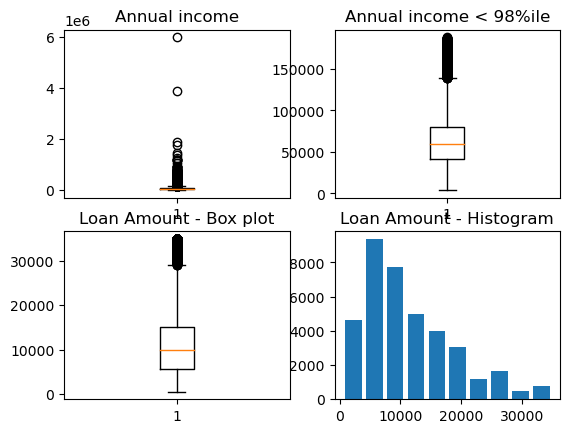
There is a clear gap in annual income for entries above 2M\$ with just two entries at 4M\$ and 6M\$ respectively. We can ignore those After removing rows that have outliers from above, we get below:
loan_data_df = loan_data_df[loan_data_df.annual_inc < 2000000]Analyze columns of interest
Find relation between all money columns
c = loan_data_df[['loan_amnt', 'funded_amnt', 'funded_amnt_inv', 'installment', 'total_pymnt', 'total_pymnt_inv', 'total_rec_prncp', 'total_rec_int',
'out_prncp', 'out_prncp_inv',
'total_rec_late_fee',
'last_pymnt_amnt',
'recoveries', 'collection_recovery_fee']].corr()
plt.title("Correlation of all amounts type columns")
sns.heatmap(c, annot=True, fmt=".1f")
plt.show()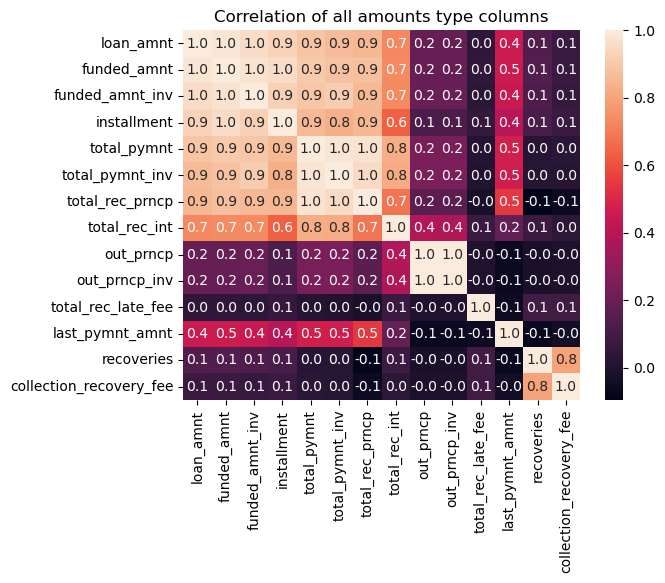
Ignoring Investor specific and recovery data columns
Since lending club is an investor backed P2P lending service, we can ignore the columns like funded_amnt, funded_amnt_inv, total_pymnt_inv, out_prncp_inv.
Also we will focus on loan related amounts rather than late / recovery details are only related to each other.
c = loan_data_df[['loan_amnt', 'installment', 'total_pymnt', 'total_rec_prncp', 'total_rec_int', 'annual_inc',
'out_prncp',
'last_pymnt_amnt']].corr()
plt.title("Correlation of all amounts type columns")
sns.heatmap(c, annot=True, fmt=".1f")
plt.show()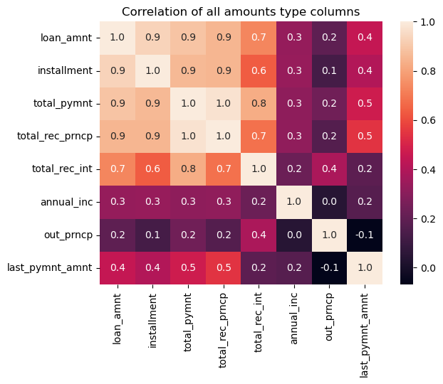
From the above graph, we see these group of columns highly correlated:
G1: ‘loan_amnt’, ‘funded_amnt’, ‘funded_amnt_inv’, ‘installment’, ‘total_pymnt’, ‘total_pymnt_inv’, ‘total_rec_prncp’, ‘total_rec_int’
G2: ‘out_prncp’, ‘out_prncp_inv’
G3: ‘recoveries’, ‘collection_recovery_fee’
rest are not that related to each other.
Note : On the contrary of conventional idea, the Annual income and loan amount are very weakly related.
# plot of default ratio to the total loans given per state.
loan_data_df.groupby(['addr_state']).agg(default_ratio=('loan_status', lambda x: (x=='Charged Off').sum() / x.count())).plot.box()<Axes: >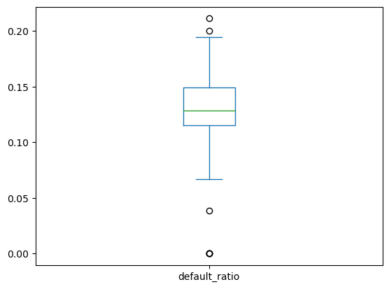
Distribution of loans per state
ax = loan_data_df.groupby(['addr_state']).agg(
# avg_income=('annual_inc', 'mean'),
# num_of_loans=('id', 'count'),
charge_off=('loan_status', lambda x: (x=='Charged Off').sum()),
fully_paid=('loan_status', lambda x: (x=='Fully Paid').sum()),
current=('loan_status', lambda x: (x=='Current').sum()),
).plot.bar(stacked=True, xlabel='State', ylabel='Num of loans', figsize=(15, 8))
loan_data_df.groupby(['addr_state']).agg(default_rate=('loan_status', lambda x: (x=='Charged Off').sum() / x.count())).plot.line(secondary_y='default_rate', ax=ax, color='r', rot=45)<Axes: >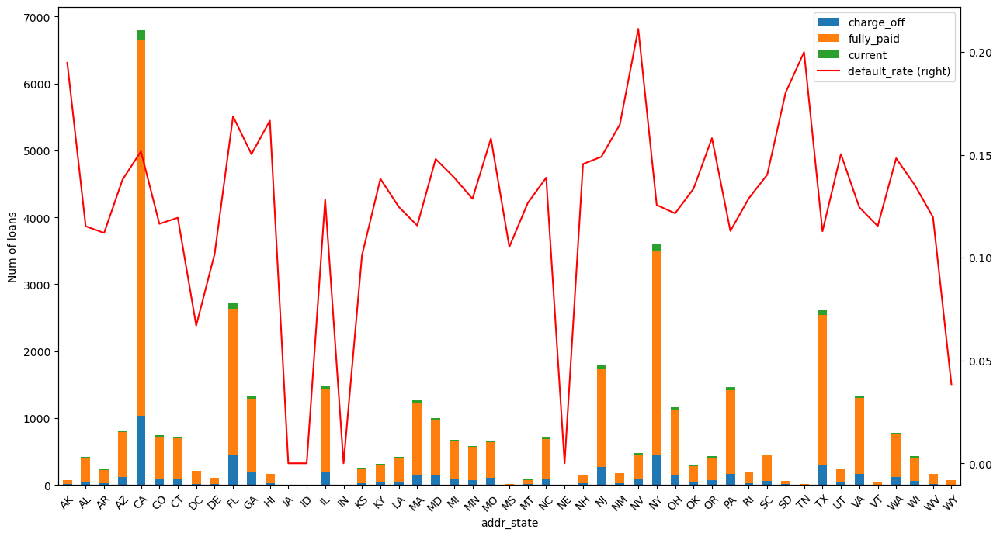
Summary
75 percentile of states are having default rate of around 0.15, so combining both visualizations, following states could be explored for more segmentation, * FL * HI * NV * TN * SD
to understand what’s causing the defaults at higher rate.
– Include in insight
Distribution of Average loan amount and Annual Income
ax = loan_data_df.groupby(['addr_state']).agg(
avg_income=('annual_inc', 'mean'),
avg_loan=('loan_amnt', 'mean'),
).plot.line( xlabel='State', ylabel='Amount', figsize=(15, 8))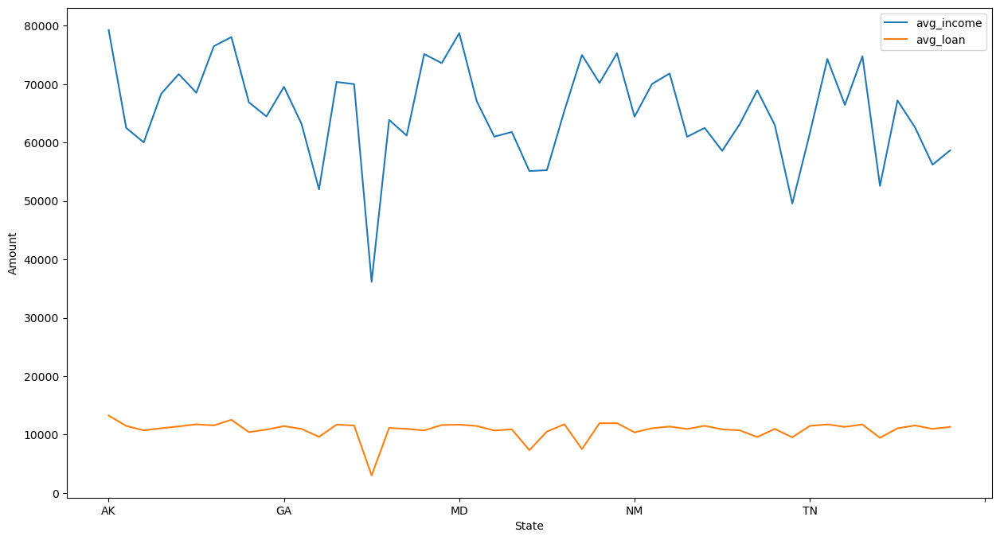
Distribution of types of loan_statuses on different params
ax = loan_data_df.groupby(['loan_amnt_range']).agg(
charge_off=('loan_status', lambda x: (x=='Charged Off').sum()),
fully_paid=('loan_status', lambda x: (x=='Fully Paid').sum()),
current=('loan_status', lambda x: (x=='Current').sum()),
).plot.bar(stacked=True, xlabel='loan amount', ylabel='num of loans', figsize=(10, 8))
loan_data_df.groupby(['loan_amnt_range']).agg(default_rate=('loan_status', lambda x: (x=='Charged Off').sum() / x.count())).plot.line(secondary_y='default_rate', ax=ax, color='r')<Axes: >
ax = loan_data_df.groupby(['annual_inc_range']).agg(
charge_off=('loan_status', lambda x: (x=='Charged Off').sum()),
fully_paid=('loan_status', lambda x: (x=='Fully Paid').sum()),
current=('loan_status', lambda x: (x=='Current').sum()),
).plot.bar(stacked=True, xlabel='annual income', ylabel='num of loans', figsize=(10, 8))
loan_data_df.groupby(['annual_inc_range']).agg(default_rate=('loan_status', lambda x: (x=='Charged Off').sum() / x.count())).plot.line(secondary_y='default_rate', ax=ax, color='r')<Axes: >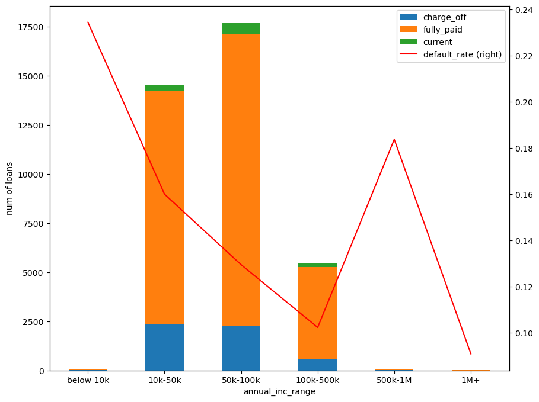
ax = loan_data_df.groupby(['verification_status']).agg(
charge_off=('loan_status', lambda x: (x=='Charged Off').sum()),
fully_paid=('loan_status', lambda x: (x=='Fully Paid').sum()),
current=('loan_status', lambda x: (x=='Current').sum()),
).plot.bar(stacked=True, xlabel='verification status', ylabel='num of loans', figsize=(10, 8))
loan_data_df.groupby(['verification_status']).agg(default_rate=('loan_status', lambda x: (x=='Charged Off').sum() / x.count())).plot.line(secondary_y='default_rate', ax=ax, color='r')<Axes: >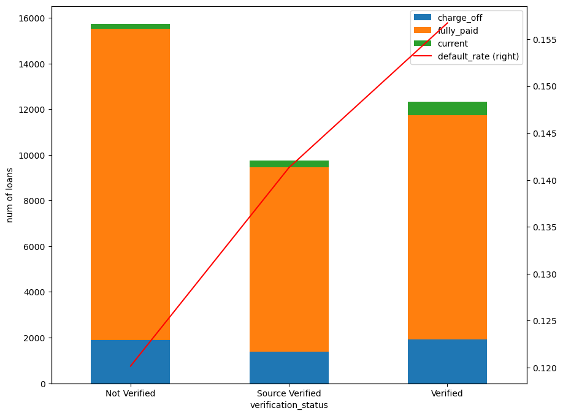
Summary
Verified status does not have much impact on the probability of default. We need to dig deeper to confirm this fact / bias.
ax = loan_data_df[loan_data_df.loan_status=='Charged Off'].groupby(['loan_amnt_range']).agg(
not_verified=('verification_status', lambda x: (x=='Not Verified').sum()),
source_verified=('verification_status', lambda x: (x=='Source Verified').sum()),
verified=('verification_status', lambda x: (x=='Verified').sum()),
).plot.bar(stacked=False, xlabel='Loan Amount Range', ylabel='Num of Loans', figsize=(10, 8))
#loan_data_df.groupby(['verification_status']).agg(default_rate=('loan_status', lambda x: (x=='Charged Off').sum() / x.count())).plot.line(secondary_y='default_rate', ax=ax, color='r')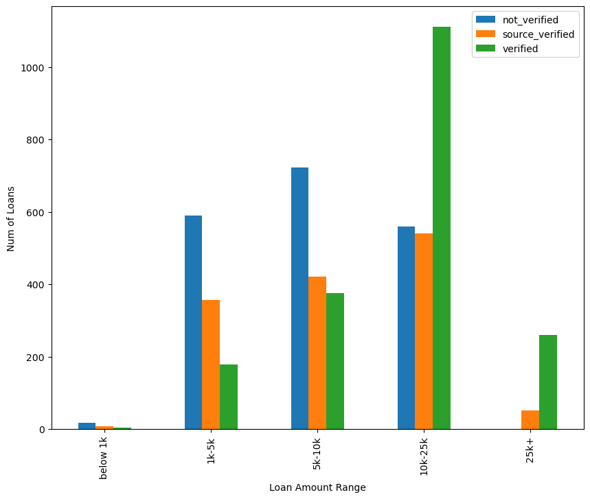
ax = loan_data_df[loan_data_df.loan_status=='Charged Off'].groupby(['annual_inc_range']).agg(
not_verified=('verification_status', lambda x: (x=='Not Verified').sum()),
source_verified=('verification_status', lambda x: (x=='Source Verified').sum()),
verified=('verification_status', lambda x: (x=='Verified').sum()),
).plot.bar(stacked=False, xlabel='Loan Amount Range', ylabel='Num of Loans', figsize=(10, 8))
#loan_data_df.groupby(['verification_status']).agg(default_rate=('loan_status', lambda x: (x=='Charged Off').sum() / x.count())).plot.line(secondary_y='default_rate', ax=ax, color='r')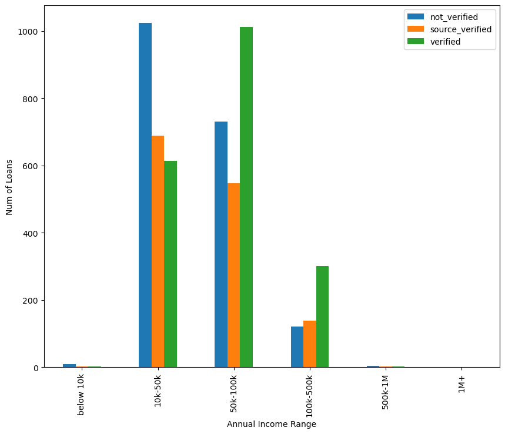
ax = loan_data_df.groupby(['purpose']).agg(
charge_off=('loan_status', lambda x: (x=='Charged Off').sum()),
fully_paid=('loan_status', lambda x: (x=='Fully Paid').sum()),
current=('loan_status', lambda x: (x=='Current').sum()),
).plot.bar(stacked=True, xlabel='purpose of loan', ylabel='num of loans', figsize=(15, 6))
loan_data_df.groupby(['purpose']).agg(default_rate=('loan_status', lambda x: (x=='Charged Off').sum() / x.count())).plot.line(secondary_y='default_rate', ax=ax, color='r', rot=45)
plt.show()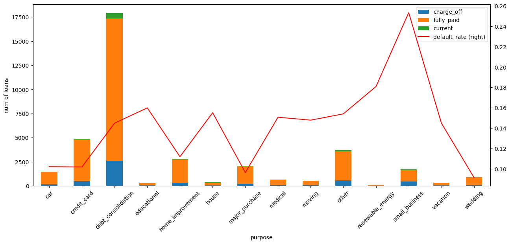
ax = loan_data_df.groupby(['delinq_2yrs']).agg(
charge_off=('loan_status', lambda x: (x=='Charged Off').sum()),
fully_paid=('loan_status', lambda x: (x=='Fully Paid').sum()),
# current=('loan_status', lambda x: (x=='Current').sum()),
).plot.bar(stacked=False, xlabel='delinq in 2yrs', ylabel='num of loans', logy=True, figsize=(10, 8))
loan_data_df.groupby(['delinq_2yrs']).agg(default_rate=('loan_status', lambda x: (x=='Charged Off').sum() / x.count())).plot.line(secondary_y='default_rate', ax=ax, color='r')<Axes: >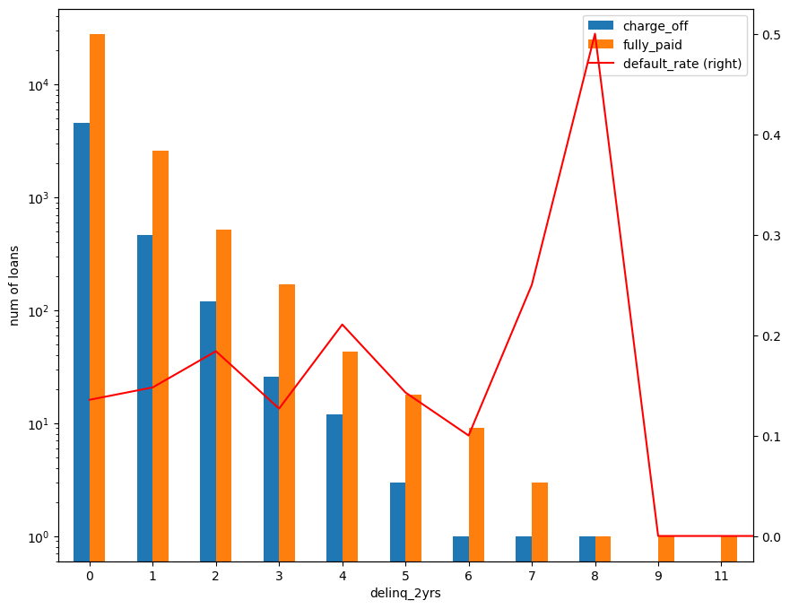
Summary
In the current dataset, the measure : delinquency in last 2 years is not a very useful information because even for zero deliquant borrowers, there 10% of loans are charged off.
Yes when the no. of delinquency instances increase, the ratio does got up but the number of loans are so less, we can not conclude accurately.
It seems that Lending club is already considering this measure while approving the loans and hardly 2% to 3% of total loans are given when there is one of more delinquency instances.
# 'installment_to_month_inc'
ax = loan_data_df.groupby(['open_to_total_acc']).agg(
charge_off=('loan_status', lambda x: (x=='Charged Off').sum()),
fully_paid=('loan_status', lambda x: (x=='Fully Paid').sum()),
# current=('loan_status', lambda x: (x=='Current').sum()),
).plot.bar(stacked=True, xlabel='ratio of open to total accounts', ylabel='num of loans', figsize=(10, 8))
loan_data_df.groupby(['open_to_total_acc']).agg(default_rate=('loan_status', lambda x: (x=='Charged Off').sum() / x.count())).plot.line(secondary_y='default_rate', ax=ax, color='r')
plt.show()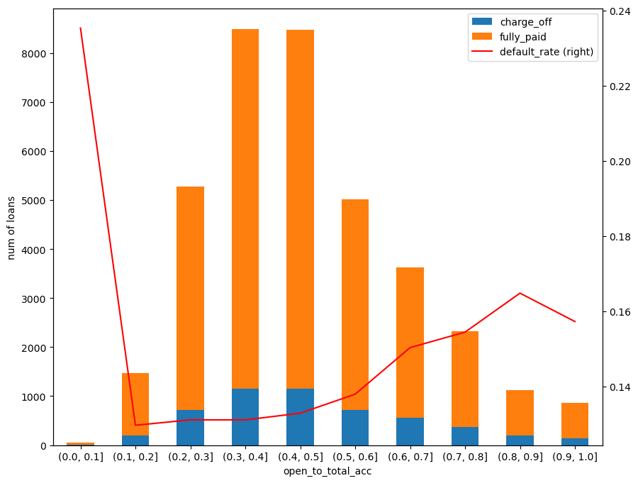
ax = loan_data_df.groupby(['installment_to_month_inc']).agg(
charge_off=('loan_status', lambda x: (x=='Charged Off').sum()),
fully_paid=('loan_status', lambda x: (x=='Fully Paid').sum()),
).plot.bar(stacked=True, xlabel='installment to monthly income ratio', ylabel='num of loans', figsize=(10, 8))
loan_data_df.groupby(['installment_to_month_inc']).agg(
default_rate=('loan_status', lambda x: (x=='Charged Off').sum() / x.count())).plot.line(secondary_y='default_rate', ax=ax, color='r', rot=45)<Axes: >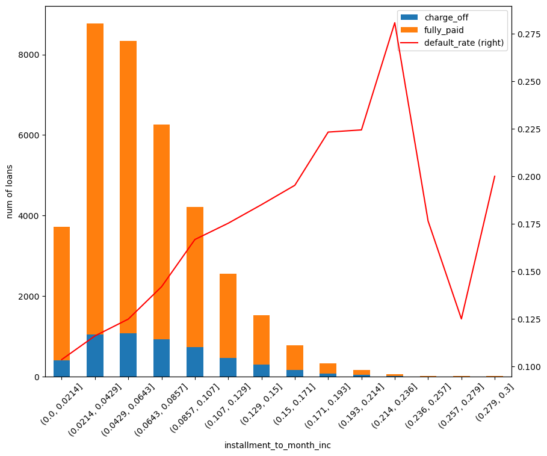
loan_data_df.groupby(['annual_inc_range','verification_status']).agg(
charge_off=('loan_status', lambda x: (x=='Charged Off').sum()),
fully_paid=('loan_status', lambda x: (x=='Fully Paid').sum()),
).plot.bar(xlabel='installment to monthly income ratio', ylabel='num of loans')
loan_data_df.groupby(['annual_inc_range', 'verification_status']).agg(
default_rate=('loan_status', lambda x: (x=='Charged Off').sum() / x.count())).plot.line(secondary_y='default_rate', ax=ax, color='r', rot=45)
plt.show()
c = pd.pivot_table(loan_data_df, index='annual_inc_range', columns='verification_status', values='loan_status', aggfunc=lambda x: (x=='Charged Off').sum() / x.count())
plt.title('Default rates for Loan amounts vs Verification status')
sns.heatmap(c, annot=True, fmt=".2f")
plt.show()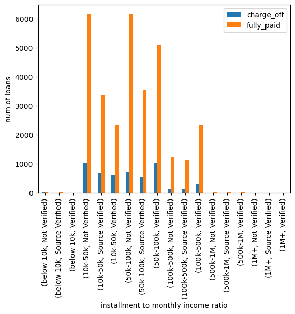
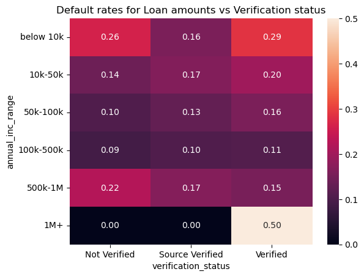
print(pd.pivot_table(loan_data_df[loan_data_df['loan_status'] == 'Charged Off'], index=['annual_inc_range', 'loan_amnt_range'], columns='verification_status', values='loan_status_n', aggfunc='count'))
c = pd.pivot_table(loan_data_df, index='loan_amnt_range', columns='verification_status', values='loan_status', aggfunc=lambda x: (x=='Charged Off').sum() / x.count())
sns.heatmap(c, annot=True, fmt=".2f")verification_status Not Verified Source Verified Verified
annual_inc_range loan_amnt_range
below 10k below 1k 2 1 0
1k-5k 8 2 2
5k-10k 0 0 0
10k-25k 0 0 0
25k+ 0 0 0
10k-50k below 1k 14 6 4
1k-5k 387 246 107
5k-10k 417 235 180
10k-25k 207 201 316
25k+ 0 1 7
50k-100k below 1k 2 1 0
1k-5k 177 100 54
5k-10k 266 158 162
10k-25k 285 262 629
25k+ 1 26 167
100k-500k below 1k 0 0 0
1k-5k 18 8 16
5k-10k 38 29 34
10k-25k 65 76 165
25k+ 0 25 86
500k-1M below 1k 0 0 0
1k-5k 0 1 0
5k-10k 2 0 0
10k-25k 2 2 1
25k+ 0 0 1
1M+ below 1k 0 0 0
1k-5k 0 0 0
5k-10k 0 0 0
10k-25k 0 0 1
25k+ 0 0 0<Axes: xlabel='verification_status', ylabel='loan_amnt_range'>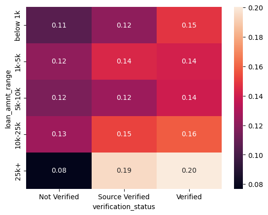
# Taking a loan with more than 30% of annual inc makes the probability of charge off higher.
fig, (ax1, ax2) = plt.subplots(1,2, figsize=(15,7))
c = pd.pivot_table(loan_data_df[loan_data_df.term == 36], index='annual_inc_range', columns='loan_amnt_range', values='loan_status', aggfunc=lambda x: (x=='Charged Off').sum() / x.count())
sns.heatmap(c, annot=True, fmt=".2f", ax=ax1)
ax1.set_title('Annual income to loan amount showing default rates for 36m term ')
c = pd.pivot_table(loan_data_df[loan_data_df.term == 60], index='annual_inc_range', columns='loan_amnt_range', values='loan_status', aggfunc=lambda x: (x=='Charged Off').sum() / x.count())
sns.heatmap(c, annot=True, fmt=".2f", ax=ax2)
ax2.set_title('Annual income to loan amount showing default rates for 60m term')
plt.show()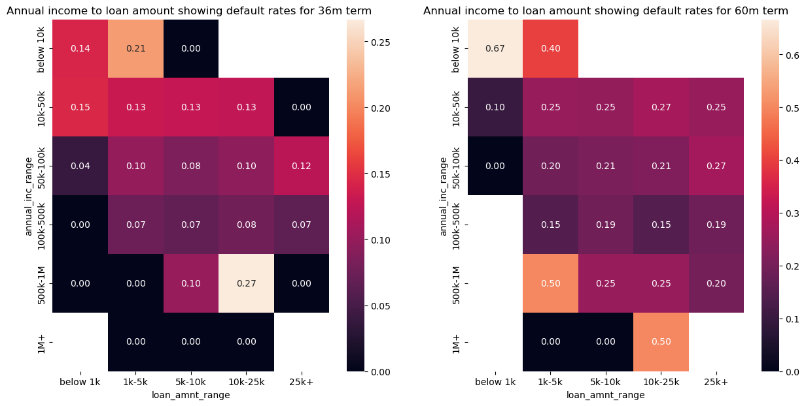
# higher loan term makes the probability of charge off higher for larger loan amounts
fig, (ax1, ax2) = plt.subplots(1,2, figsize=(15,7))
pd.pivot_table(loan_data_df, index='loan_amnt_range', columns='term', values='loan_status', aggfunc=lambda x: (x=='Charged Off').sum() / x.count()).plot.line(ax=ax1, ylabel='Default rate')
pd.pivot_table(loan_data_df, index='annual_inc_range', columns='term', values='loan_status', aggfunc=lambda x: (x=='Charged Off').sum() / x.count()).plot.line(ax=ax2, ylabel='Default rate')<Axes: xlabel='annual_inc_range', ylabel='Default rate'>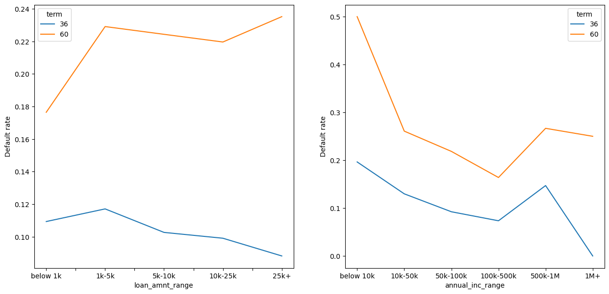
Summary
The loan term has a positive correlation with “charged off” probability.
Higher the tenure and higher the loan amount, are positvely correlated with the probability of charged off.
and higher tenure (i.e. 60 months) would always higher probablity of charged off compared to lower tenure (i.e. 36 months) regardless of the loan amount.
In general higher tenure loans recover high portion of interest in initial 50% of time and that may be the reason.
– Insight
fig, (ax1, ax2) = plt.subplots(1,2, figsize=(12,6))
defaulted_loans = loan_data_df[loan_data_df.loan_status == 'Charged Off']
pd.cut(defaulted_loans[defaulted_loans.term==36].total_rec_prncp / defaulted_loans[defaulted_loans.term==36].loan_amnt , bins=np.linspace(0,1,7)).value_counts(sort=False).plot.line(rot=45, ax=ax1, xlabel='fraction of loan repaid', ylabel='num of defaulted loans')
ax1.set_title('Fraction repaid vs num of defaulted loans (loan term=36)')
pd.cut(defaulted_loans.total_rec_prncp[defaulted_loans.term==60] / defaulted_loans[defaulted_loans.term==60].loan_amnt , bins=np.linspace(0,1,7)).value_counts(sort=False).plot.line(rot=45, ax=ax2, xlabel='fraction of loan repaid', ylabel='num of defaulted loans')
ax2.set_title('Fraction repaid vs num of defaulted loans (loan term=60)')
# defaulted_loans[['total_pymnt', 'total_rec_prncp', 'out_prncp']]Text(0.5, 1.0, 'Fraction repaid vs num of defaulted loans (loan term=60)')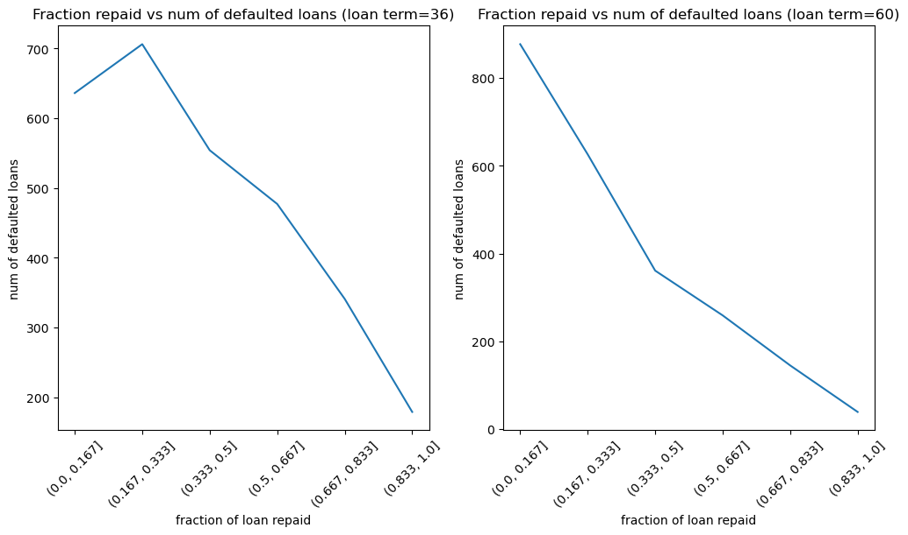
fig, (ax1, ax2) = plt.subplots(1,2, figsize=(12,6))
defaulted_loans = loan_data_df[loan_data_df.loan_status == 'Charged Off']
pd.cut(defaulted_loans[defaulted_loans.term==36].total_rec_prncp / defaulted_loans[defaulted_loans.term==36].loan_amnt , bins=np.linspace(0,1,7)).value_counts(sort=False).plot.line(rot=45, ax=ax1, xlabel='fraction of loan repaid', ylabel='num of defaulted loans')
ax1.set_title('Fraction repaid vs num of defaulted loans (loan term=36)')
pd.cut(defaulted_loans.total_rec_prncp[defaulted_loans.term==60] / defaulted_loans[defaulted_loans.term==60].loan_amnt , bins=np.linspace(0,1,7)).value_counts(sort=False).plot.line(rot=45, ax=ax2, xlabel='fraction of loan repaid', ylabel='num of defaulted loans')
ax2.set_title('Fraction repaid vs num of defaulted loans (loan term=60)')
# defaulted_loans[['total_pymnt', 'total_rec_prncp', 'out_prncp']]Text(0.5, 1.0, 'Fraction repaid vs num of defaulted loans (loan term=60)')
Summary
The probablity of charged off is inversely correlated to the principal received.
– insight
fig, (ax1, ax2) = plt.subplots(1,2, figsize=(20,8))
defaulted_loans = loan_data_df[loan_data_df.loan_status == 'Charged Off']
pd.cut(defaulted_loans.dti, bins=np.linspace(0,33,7)).value_counts(sort=False).plot.line(rot=45, xlabel='dti', ylabel='num of defaulted loans', ax=ax1)
ax1.set_title('DTI vs num of defaulted loans')
defaulted_loans.installment_to_month_inc.value_counts(sort=False).plot.line(rot=45, xlabel='installment_to_month_inc', ylabel='num of defaulted loans', ax=ax2)
ax2.set_title('installment/montly_income vs num of defaulted loans')Text(0.5, 1.0, 'installment/montly_income vs num of defaulted loans')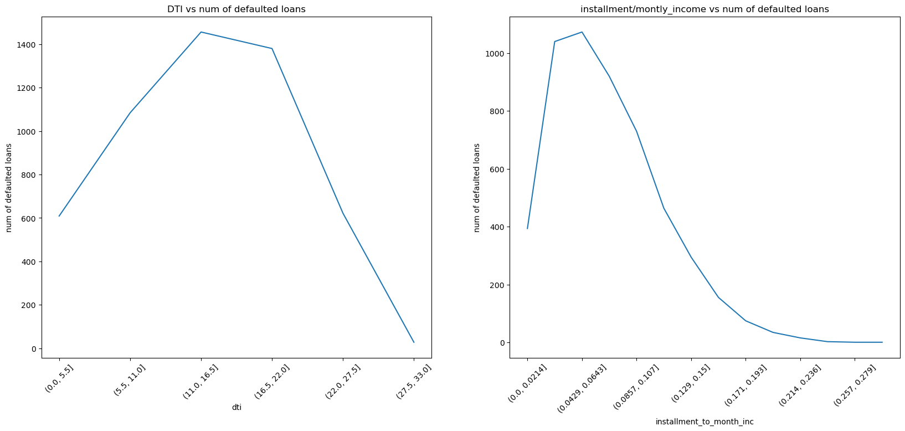
defaulted_loans = loan_data_df[loan_data_df.loan_status == 'Charged Off']
pd.cut(defaulted_loans.revol_util, bins=np.linspace(0,1,11)).value_counts(sort=False).plot.line(rot=45, xlabel='utilization of credit available', ylabel='num of defaulted loans')
plt.title('utilization of credit available vs num of defaulted loans')
plt.show()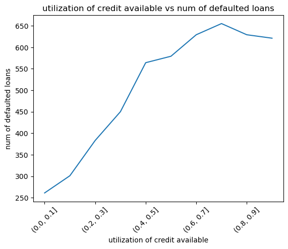